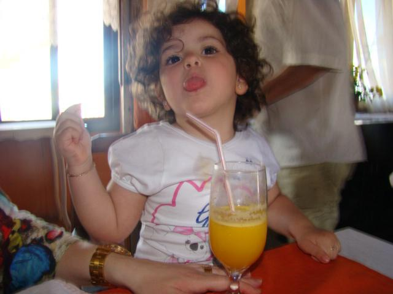
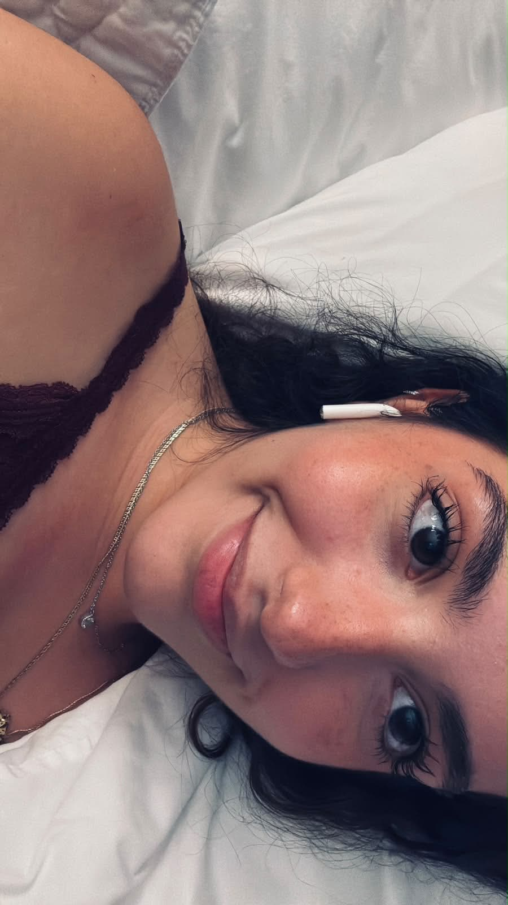
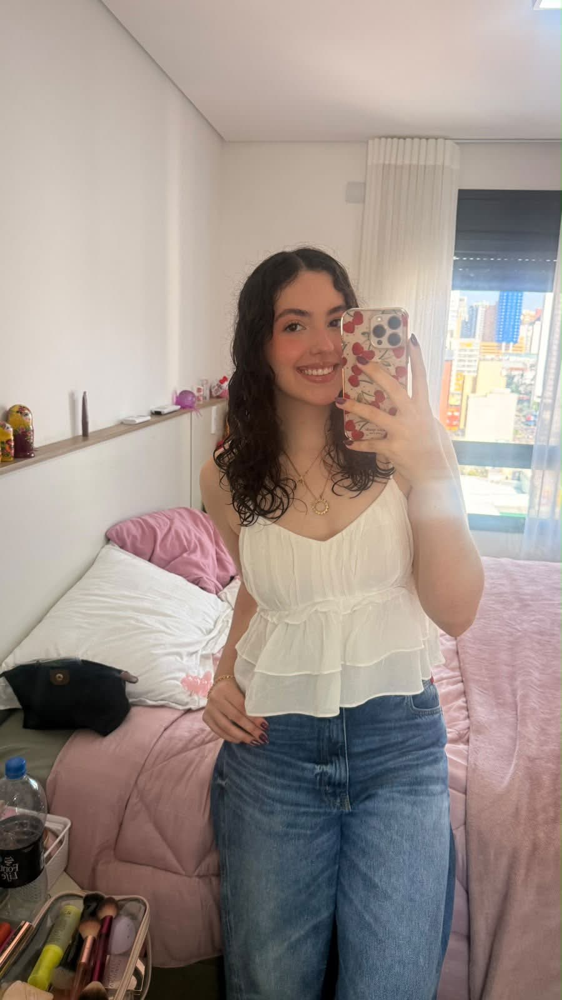
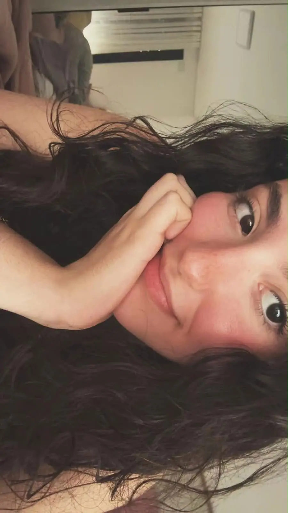
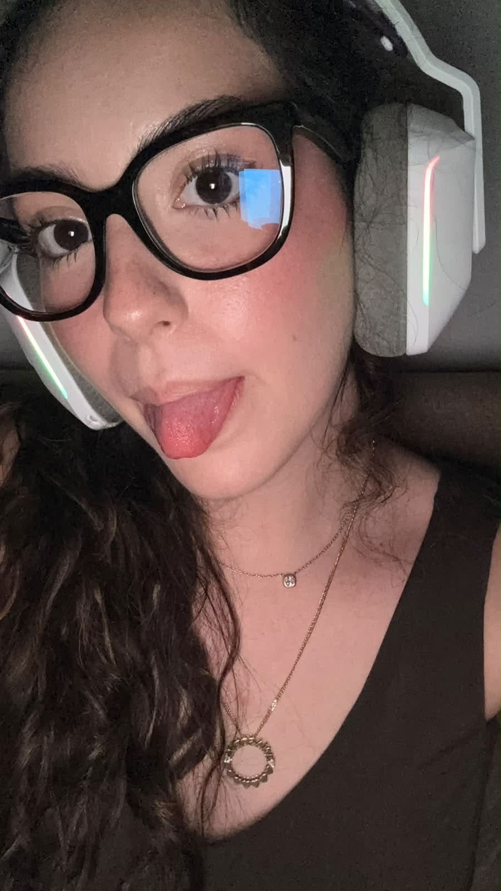
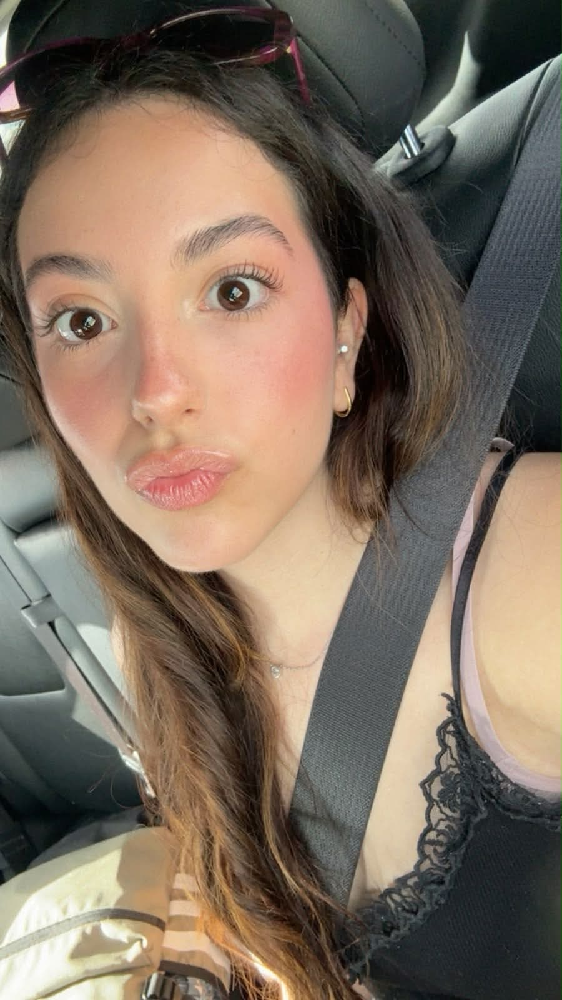
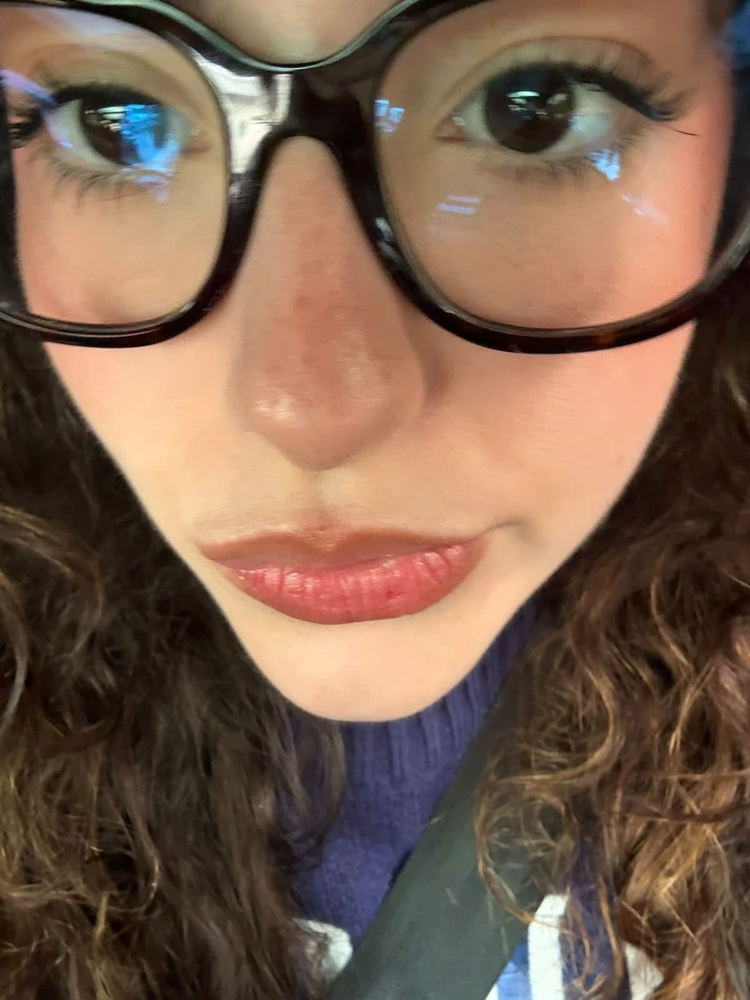
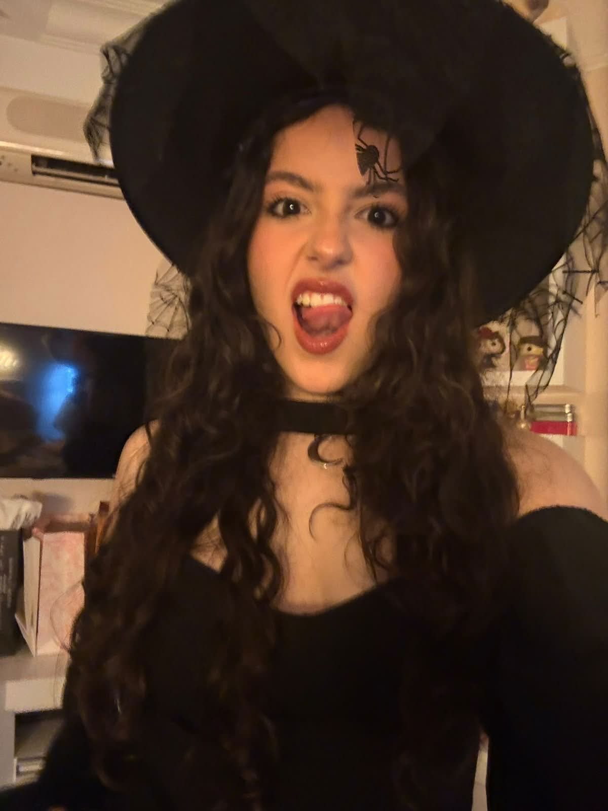
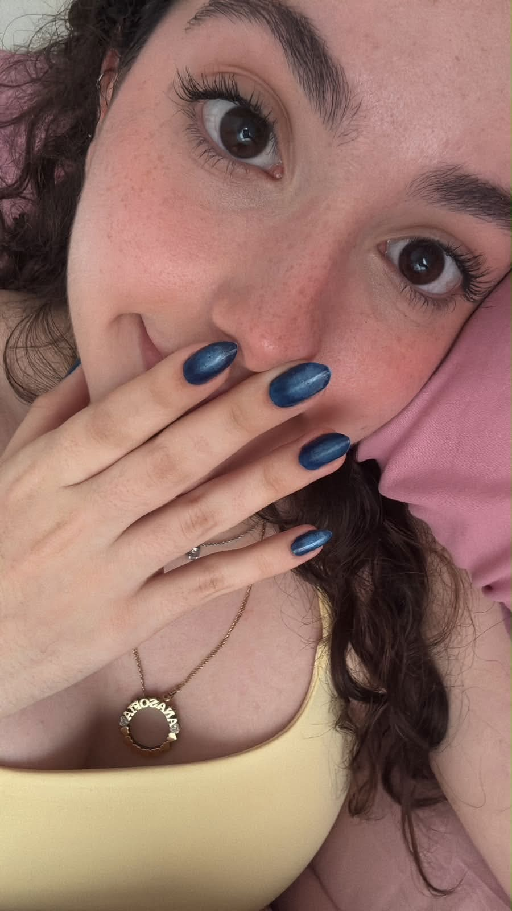
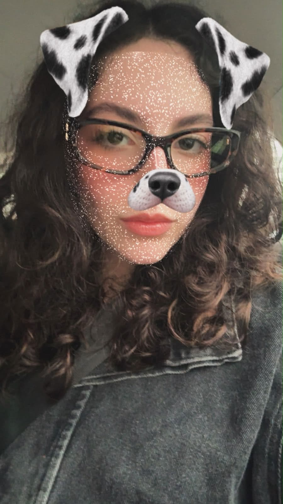

MOMENTOS PRECIOSOS

Então nasceu no dia 22/01/2008, a menina do barulho do aimbot :)

Seu olhar é uma das coisas mais bonitas que já encontrei. Existe nele algo que me faz querer parar o tempo só para admirar mais um pouquinho.

Seu sorriso tem o dom de iluminar até os meus dias mais comuns. É impossível não achar o mundo mais bonito quando você sorri.

Seu jeito meigo tem uma beleza rara. Existe tanta delicadeza nos seus gestos e tanta doçura na sua maneira de ser.

Suas brincadeiras têm um encanto especial. Adoro a leveza com que você transforma pequenos momentos em lembranças tão gostosas de guardar.

Gosto de como você se faz presente, de como demonstra carinho nos pequenos detalhes e faz questão de estar por perto. Sua presença torna tudo um pouquinho mais especial..

Admiro sua dedicação e o carinho que coloca em tudo o que faz. É lindo ver o quanto você se esforça, corre atrás dos seus objetivos e busca sempre ser alguém melhor.

O que mais admiro em você é a liberdade de ser quem realmente é. Essa pessoa brincalhona, espontânea e cheia de encanto. Nunca deixe de sorrir, brincar e espalhar essa luz tão sua, porque existe algo verdadeiramente especial na sua essência.

Existe uma beleza em você que vai muito além do que os olhos podem ver. Sua alma carrega uma doçura rara, seu coração parece guardar as coisas mais bonitas do mundo. Se eu pudesse escolher uma palavra para descrever sua essência, seria encanto.

Nunca se esqueça da menina incrível que você é. Lembre-se de tudo o que ainda vai viver, de todos os sonhos que ainda vai realizar e de toda a força que existe dentro de você. A vida nem sempre será fácil, mas nunca duvide da mulher forte, doce e admirável que está se tornando. Você merece viver coisas tão bonitas quanto a pessoa que é.
"
Cada momento seu para lembrar da pessoa incrivel que você é."